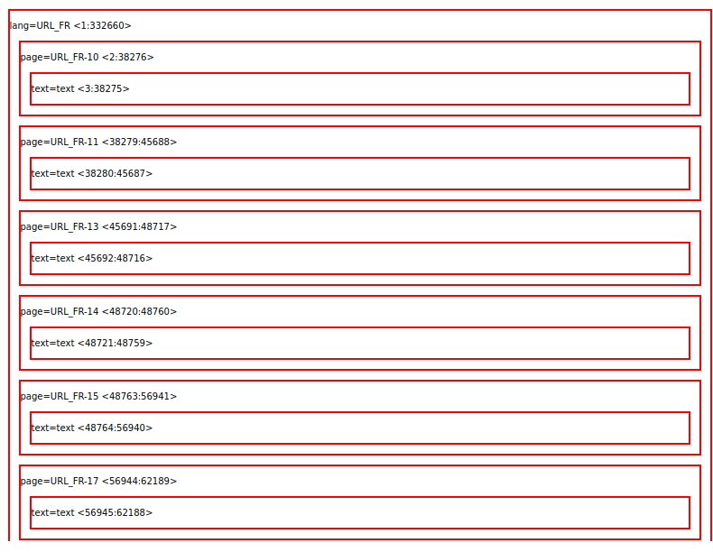
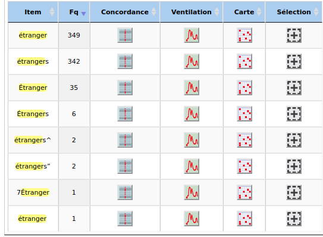
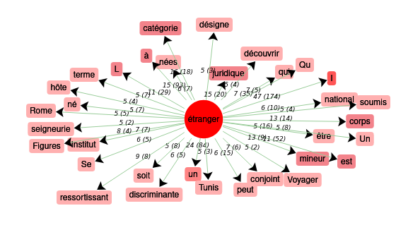
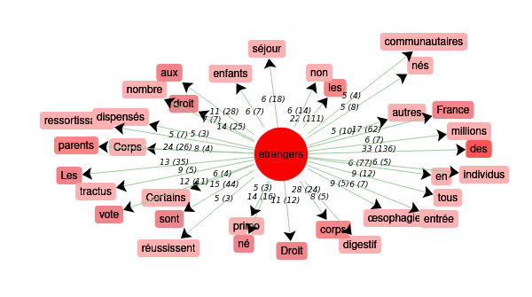
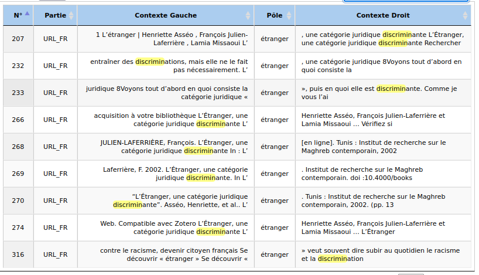
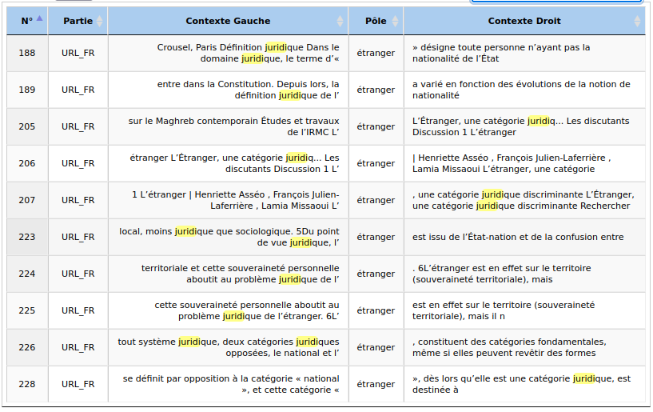
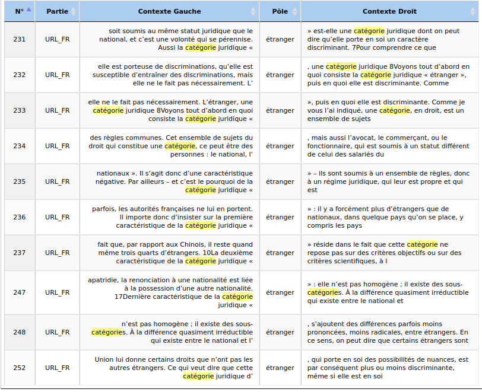
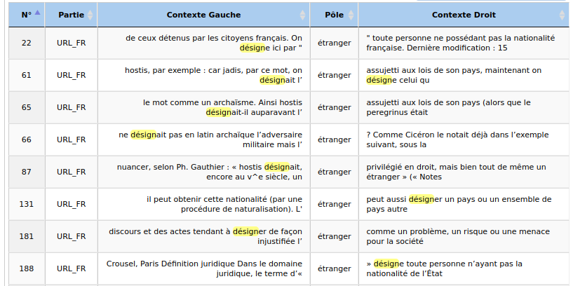
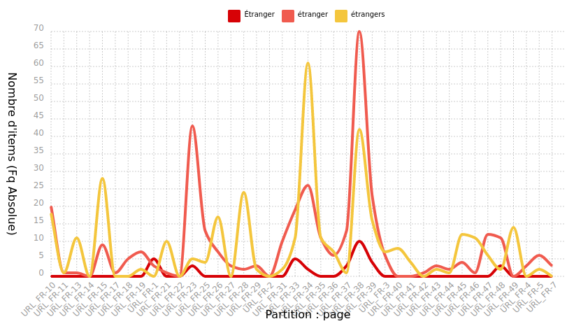

Analyse Itrameur
(E|é|É)trangers?
Corpus Français
Pour permettre l'analyse de nos données sur Itrameur, nous avons du concatener nos fichiers textes extraits au préalable par le script ( cf à la partie scripts)
Le script qui nous a permis de concatener nos fichiers textes et de le nettoyer de caractères indésirables est itrameur.sh
pour sa bonne execution nous avons crée un dossier qui contiendra le fichier concatené
Nous n'avons qu'un seul mot en français que nous analyserons de ce fait les fichiers textes concaténés seront ceux du mot : étranger
Le résultat de la concaténation des 50 fichiers textes du dossier dump est le fichier texte se nommmant : dumps-text_FR-URL_FR
Les balises utilisées pour le bon fonctionnement de itrameur vont être placées entre chaque dumps dans le fichier texte concaténé
Bonne importation
Nous voyons à travers cette image le placement de nos balises. Lorsque cette page s'affiche ça veut dire que l'importation du corpus s'est bien passée.
En effet la délimation de chaque fichier texte par URL s'est bien réalisée , les cadres sont réguliers et logiques. Nous avons donc une imbrications des balises correctes
Dictionnaire
Le dictionnaire nous permet de voir quel forme du mot étranger est la plus répendue dans notre corpus. Les différentes formes peuvent être représentées avec la regex suivant : (E|é|É)trangers?
Nous pouvons voir que c'est la forme au singulier qui est la plus répendue dans la totalité de notre corpus, de ce fait il nous semble pertinnent d'utiliser cette forme pour la cooccurence et voir le contexte du mot. Neanmoins la forme pluriel étant bien présente également nous allons également regarder sa cooccurence et la comparer à la forme singulière.
Cooccurent
Grâce à la cooccurence nous pouvons voir l'entourage du mot étranger au singulier le plus fréquent. De ce fait cela nous permet de pouvoir cibler par la suite les mots clefs qui vont nous permettre de mieux percevoir l'image que détient ce terme et comment il est perçu
Le terme étranger est un terme qui a des contextes très divergents les uns des autres, Nous pouvons donc penser qu'il a plusieurs définitions au sein de la communauté. De plus la partie du discours de ce terme peut être un nom, un nom propre ou même un adjectif.
Nous pouvons voir qu'au pluriel des termes medicaux ressortent tels que : "oesophage", "digestifs". Le terme est également perçu comme étant un adjectif , dans le sens du corps étranger. Ce ne sont pas les significations qui nous interessent dans le cadre de notre projet, nous allons donc nous interesser aux termes touchant la communauté sociale. Toutefois nous pouvons voir la présence du mot " communautaire" ainsi qu"individu" . Il n y a pas de différence significative entre la forme singulière et pluriel toutes deux touchent à des représentation sociales d'un individu ou d'une communauté
Concordance
L'outil concordance nous permet de voir les contextes gauches et droits. Au vu du nombre d'occurence très élevé j'ai décidé de cibler les concordances avec les termes les plus empruntés autour du mot étranger. Pour ce faire je me suis aidée des données que m'a transmis la cooccurence
Nous pouvons voir que le terme étranger est fortement lié au terme " discriminant". Le terme discriminant est un terme perçu comme social, on peut donc voir que le mot étranger est un mot incrémenté dans la société. Celui-ci peut avoir une connotation discriminante, en plus de cela nous avons aussi le terme "racisme" . Ces deux termes témoignent de l'image péjorative que peut avoir le terme étranger à travers les contextes. Dans le cas d'une image péjorative, affecter le terme étranger (étant un adjectif dans ce cas là) a un nom semble être un trait caractériel , comme il est dit dans la concordance " se découvrir étranger" , ici nous voyons qu'étranger est perçu comme une humeur, un trait de la personnalité ou une vision d'être.
Le terme étranger est également utilisé dans le cadre juridique nous pouvons voir qu'il peut être qualifié de ' catégorie juridique'. Ainsi nous voyons une véritable diversité sémantique, " étranger " ne symbolise pas qu'un individu mais aussi une catégorie , la nature même du référent est differente.
Il nous a également semblé pertinnent de voir comment se comporte la mot étranger face au mot " designer", nous pouvons voir effectivement qu'étranger désigne de nombreuses de nombreuses entités différentes
La plupart de ces significations ne sont pas perçues méjorativement. En effet nous avons la perception de problemes assimilés à "l'étranger". Il est également mis en exergue à travers cette concordance les images multiples qu'a ce terme ainsi que ses parties du discours changeantes
Ventilation
L'utilisation de l'outil ventilation nous permet de voir la fréquence absolue de différents termes rentrés dans le pôle. Pour étudier le terme étranger nous avons décider d'entrer ses différentes variantes : pluriel, singulier, utilitation d'une majuscule.
Nous pouvons voir que ce terme s'emploi très rarement avec une majuscule. Neanmoins le pluriel et le singulier semblent être utilisés à part égale. C'est donc un terme qui peut désigner un groupe comme une unité